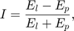
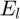
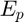
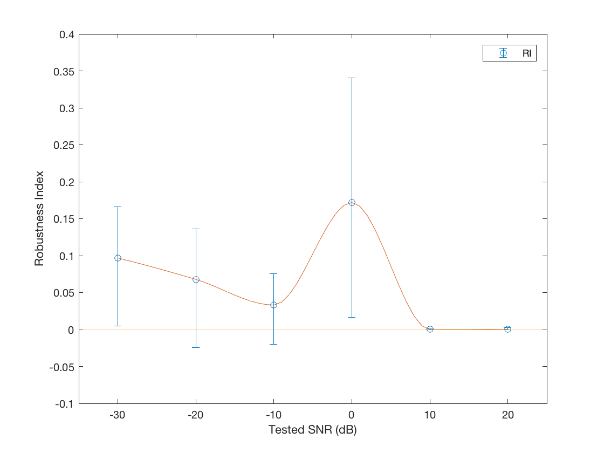

Noise Robustness Analysis
Perform analysis of noise robustness of the algorithms using data from Noise Robustness Experiments, and display the results. See the code.
Contents
Robustness Indexes Analysis
The data for the analysis are in noise_robust_data.mat. As an example of the analysis, load the data in noise_robust_data_example.mat. The relative noise robustness of the algorithms is indicated by the Robustness Index (RI),

where  is the mean squared error (MSE) of MLE algorithm and  the MSE of MPEM algorithm. Wilcoxon Rank Sum test is also conducted to test the null hypothesis that RI is not signficiantly larger than zero.
load noise_robust_data_example.mat
[rb_idx, rb_mean, rb_ci, stat] = data_mse_analysis(P, s, d_snr, snr_hat, P_hat);
RIs between the testing SNR points are indicated by the smoothed curve.
x = d_snr(~(d_snr == Inf)); v = rb_mean; xq = min(x):1:max(x); vq = interp1(x, v, xq, 'pchip'); % Shape-preserving piecewise cubic interpolation
Show Results
Display RIs as a function of testing SNR. The error bar indicates 95% confidence interval. Both the mean and the confidence interval of RIs are estimated with bootsrp resamping method.
f = @(s, m, c) errorbar(s(~(s == Inf)), m, m-c(1, :), c(2, :)-m, 'o'); figure eb = f(d_snr, rb_mean, rb_ci); % return errorbar object hold on plot(xq, vq) ax = axis(gca); xlim([ax(1)-5, ax(2)+5]) ylim([-.1 .4]) plot(xlim, [0 0]) legend(eb, 'RI') xlabel('Tested SNR (dB)') ylabel('Robustness Index')

Display the results of Wilcoxon Rank Sum test
cprintf('Keywords', 'Significant test at each SNR point:\n') disp(stat)